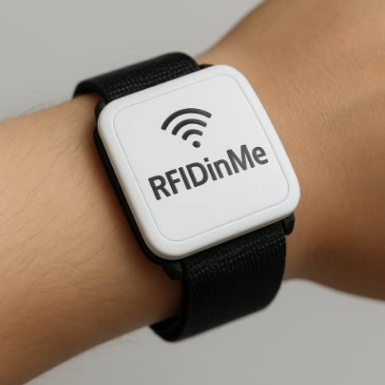
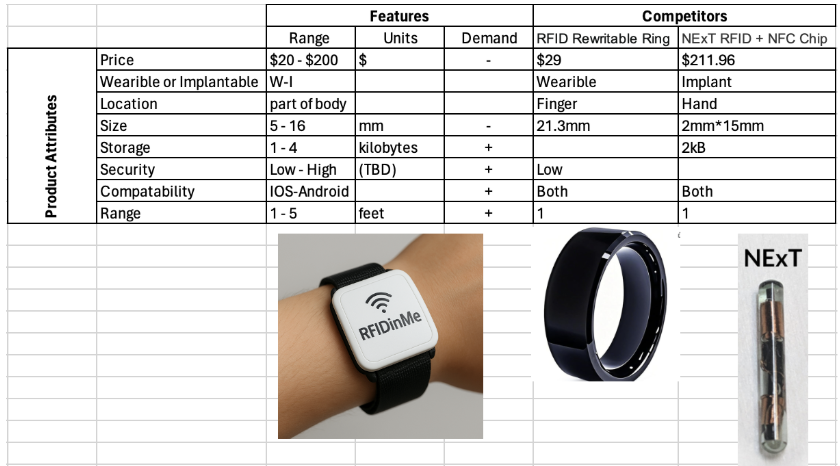

RFIDinMe
Abstract
RFIDinMe is a RFID (Radio Frequency Identification) device that allows the user to have convenient access to payment options and other features. The design will be informed by surveys that question potential customers on their feelings on seven key attributes: price, wearable vs. implantable, location, size, storage, and security. To conduct additional research, we will use the following questions: “Are customers interested in implantable technology or wearable technology?” and “To what extent should we encrypt user data?” These key attributes will be evaluated using survey results and research questions to provide an optimum design to customers.
Introduction
This project aims to research different wearable RFID devices to discover the optimum point for widespread adoption. RFID devices can be used for payment, tracking, asset management, and more. Current wearables include watches and rings; there is even a limited market for implanted RFID devices. During this project, our team will evaluate design decisions for our product, RFIDinMe.

Market Opportunity
Our customer base for this product will largely be individual consumers where RFID usage is attributed to daily activity usages such as: contactless checkout, public transport payments, E-passports/Identity cards, event passes, and more. Every situation which requires an identification number is rapidly increasing RFID adoption within their systems to make life easier for consumers.
The current market size of RFID wearables is $12.6 billion in 2025 and expected to grow to $25.2 billion in 2033 [1]. Our market share is lower as this figure includes the total RFID market which includes industrial uses of RFID such as large scanning devices and individual tags for products.
While the total market size for this subset is hard to estimate as well as the market share we anticipate to grab we can infer some things such as market regions and addressing market size. Given that RFID is being used as a software version of identification, the largest market source will come from cities in large consumer economies.
Currently the market does have a decent amount of competitors for the wearables market. Big name brands such as Walmart sell basic RFID programmable rings and individual sellers on online marketplaces such as Etsy and Amazon sell their own versions. While a website known as Dangerous Things sells both a limited amount of wearables and implantables. The current revenues of these products are unknown and need to be researched further.
| Alternative | Description | Technology Type |
|---|---|---|
| QR codes | 2D optical codes scanned by camera-enabled devices | Optical |
| Barcodes | Linear visual codes read by laser scanners | Optical |
| Bluetooth Low Energy | Short-range wireless for device-to-device communication | Wireless Radio |
| GPS tracking | Satellite-based geolocation for movement and location data | Satellite |
| Near Field Communication (NFC) | Short-range communication for contactless payments | Wireless Radio |
| Ultra-wide Band (UWB) | High-precision short-range radio for spatial awareness | Wireless Radio |
These alternatives represent the most common identification and communication technologies currently available. While optical methods like QR codes and barcodes are inexpensive and simple to deploy, wireless options such as NFC, BLE, and UWB enable faster, more secure, and more flexible interactions. GPS offers location tracking capabilities that go beyond identification but is less suited for small wearable devices. This highlights both the variety of technologies and their differing levels of feasibility which allows for RFID technology to find its niche in the market.
Product Attributes & Research Questions
After careful consideration, we have decided to explore the relationships between these key attributes: Price, wearable or implantable, location, size, supporting technology, storage, and security. Table 1 below shows these key attributes and major current competitors.

Our group decided to analyze these eight attributes due to the attributes available on current competitors, while trying to implement features to keep our product novel.
Research Question
1. Are customers interested in implantable technology or wearable technology?
This links specifically to our “Wearable vs Implantable” attribute, but also impacts the price, size, and security attributes. If RFIDinMe is wearable, it would be significantly larger than an implantable device. It would also be cheaper, as there would be few if no health restrictions. The location aspect also changes; implantable locations could include the hand or wrist, but wearable locations could be fingers, wrists, a necklace, or more. However, a wearable RFIDinMe would be less secure, as they could be stolen; an implantable device would be much more intensive to steal.
2. To what extent should we encrypt user data?
This question links to security, storage, and price. As encryption of data becomes more complicated, the security of that data increases. At the same time, as that complexity increases, so does the amount of space that the data takes up through padding. Additionally, added complexity in encryption will also increase the cost of the final product.
3. In which contexts (payment, ID, transport, medical) are customers most willing to adopt RFID technology?
This question links to security, storage, and price. As encryption of data becomes more complicated, the security of that data increases. At the same time, as that complexity increases, so does the amount of space that the data takes up through padding. Additionally, added complexity in encryption will also increase the cost of the final product.
Other Questions
1. How safe are implantable RFID devices?
We will find answers to this question by identifying whether the Food and Drug Administration in the United States and other health regulators abroad have approved RFID devices for human implantation. If they have been approved, we will also research the claims of opponents of the technology to help paint a full picture of the potential risks of using the technology.
2. How expensive (in dollars and size) is each “tag” or “signature” that is stored in the RFID device?
To answer this question, we will conduct research about existing RFID applications using manufacturer datasheets and distributor websites for prices.
3. Does NFC (Near Field Communication) offer significant advantages or disadvantages over RFID?
Similarly to the question above, we will compare and contract RFID and NFC capabilities by using manufacturer datasheets and distributor websites.
References
[1] I. M. Ops, “RFID Technology: Exploring Its Rising Demand in Recent Years,” Lowry Solutions. Accessed: Sept. 17, 2025. [Online]. Available: https://lowrysolutions.com/blog/what-is-rfid-technology-and-its-rising-demand-in-recent-years/